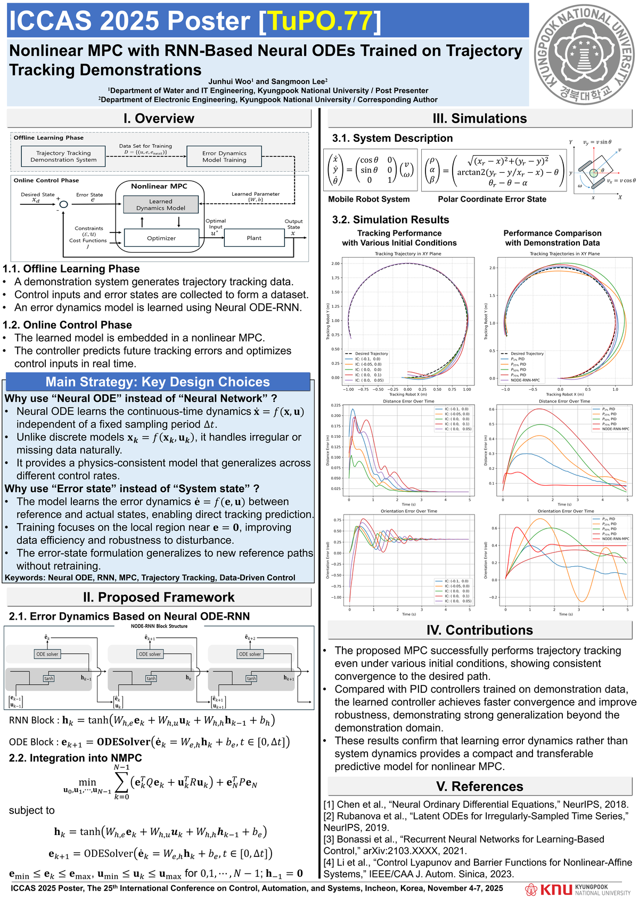
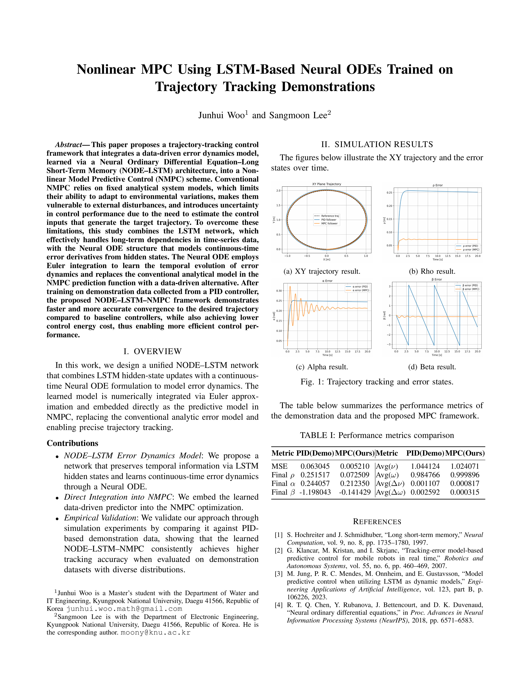
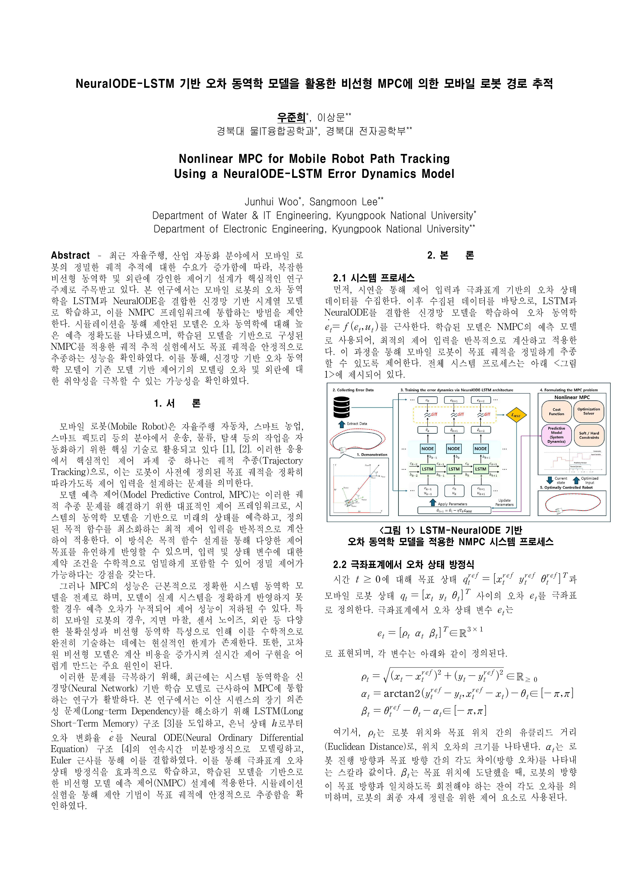

💬 Conference Talks & Posters
-
[T1]
Nonlinear MPC with RNN-Based Neural ODEs Trained on Trajectory Tracking Demonstrations
25th International Conference on Control, Automation and Systems (ICCAS 2025)
Incheon, Republic of Korea
Poster Presentation, November 4, 2025. -
[T2]
Nonlinear MPC Using LSTM-Based Neural ODEs Trained on Trajectory Tracking Demonstrations
IEEE/RSJ International Conference on Intelligent Robots and Systems (IROS 2025)
Hangzhou, China
Poster Presentation, October 22, 2025. -
[T3]
NeuralODE-LSTM 기반 오차 동역학 모델을 활용한 비선형 MPC에 의한 모바일 로봇 경로 추적
The 56th Summer Conference of the Korean Institute of Electrical Engineers (KIEE 2025)
Busan, Republic of Korea
Oral Presentation, July 18, 2025. -
[T4]
금융시장지수의 국내 주택매매시장 적용가능성 연구
Annual Meeting of the Korean Society for Industrial and Applied Mathematics (KSIAM 2019)
Yeosu, Republic of Korea
Poster Presentation, November 9, 2019.

Conference Poster

Conference Poster

Extended Abstract

Extended Abstract